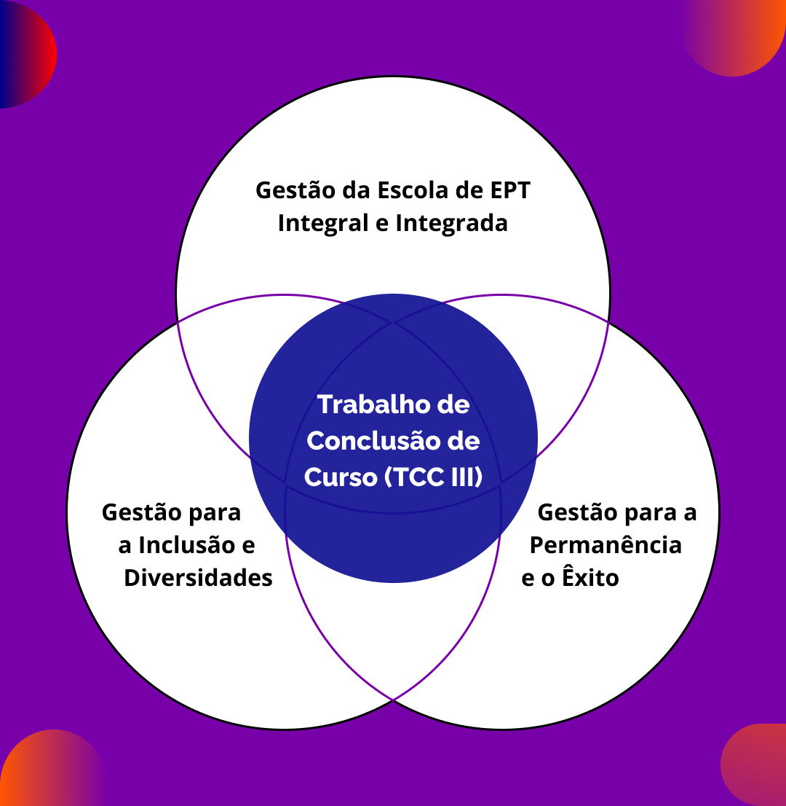

Gestão da Educação Profissional e Tecnológica
Nesse módulo de finalização do curso, você discutiu acerca das seguintes temáticas:

Título: As Unidades Temáticas do módulo III de gestão
Fonte: Prosa (2025c).
Em síntese, você refletiu sobre os aspectos que dizem respeito diretamente a uma nova perspectiva de Gestão da EPT.
Durante a elaboração do Relatório e conforme discutido no decorrer do curso, devemos trabalhar com um entendimento de gestão que contribua com a inclusão, a permanência e o êxito dos estudantes. Para isso, é fundamental reconhecer e contemplar, nas análises e decisões, as especificidades e desigualdades que afetam determinados grupos sociais, como as injustiças históricas causadas pela escravização e pelo racismo contra os povos indígenas, a população negra e as comunidades quilombolas, bem como as vivências que demarcam asexperiências de outros grupos historicamente marginalizados, como as pessoas com deficiência, mulheres, pessoas LGBTQIA+, refugiados, entre outros, considerando as interseccionalidades e as singularidades educacionais da EPT. Sabemos que não é simples, porém é de extrema importância o debate sobre e o enfrentamento dessas questões.
Título: A diversidade como precursora para inclusão, permanência e êxito escolar
Fonte: Chrisdonia (2008); Comunicação MEC (2024); DFID (2017); Granberg (2006); Metropolitan Museum of Art (2017); Paixao 677 (2024); Schüler (2023).
Elaboração: Prosa (2025d).
Para dar conta desta perspectiva de gestão, alguns elementos precisam de atenção especial:
- Aprimoramento de currículos integrados e acessíveis;
- Fomento à indissociabilidade do tripé de ensino, pesquisa e extensão;
- Cumprimento das legislações de ações afirmativas e de diminuição da desigualdade social;
- Organização da infraestrutura e dos serviços visando promover acessibilidade;
- Construção de práticas pedagógicas e de instrumentos de avaliação inclusivos.
Debatendo esses e outros elementos e compreendendo o papel da gestão em assegurar a permanência e o êxito dos estudantes, a partir dos aspectos individuais e dos fatores externos e internos à instituição escolar, será possível contribuir para uma EPT comprometida com a formação humana integral. Assim sendo, devemos almejar a gestão do processo de institucionalização de uma proposta educacional que considere o desenvolvimento humano integral na articulação entre as dimensões individuais, laborais, científicas e culturais. Essa é a perspectiva que deve guiar suas reflexões sobre a problemática analisada durante a elaboração do Relatório de Formação.